Grok Bot Agents：搭建 24/7 AI Agent 图，自动化你的生活（终极五步指南）
还在犹豫要不要读这篇文章？先看下面。
我猜你已经没什么问题了 XD @bot 会实实在在改变你的生活，这篇分步指南会告诉你到底怎么做！alpha 之前——订阅我的 substack 拿更新：https://substack.com/@0xcodila
按官方 Grok Bot 页面的说法，Bot 可以在自己的电脑上运行，登录你的工具，并行工作，并且在你合上笔记本后继续跑。
它们也能学习例程，并在彼此之间传递工作。
也就是说，你可以搭一支团队：
- Chief（总管）协调任务。
- Research（研究）收集证据。
- Strategy（策略）把证据变成计划。
- Execution（执行）产出交付物。
- Reviewer（评审）否决任何达不到标准的结果。
你定义结果。
团队处理工作。
你只在真正需要你拍板的决定上回来。
到第 2 步，你会有一个能干活的 Chief of Staff。到第 5 步，你会有一张 agent 图：合上笔记本后仍能执行、评审并改进一项任务。
开始前，打开官方 Grok Bot 页面，确认你的套餐是否已开通 Bot 权限。（费用 $200）
若还没有 Bot 权限，仍可通过 Grok Automations 与 Grok Build 实现本系统的部分能力。
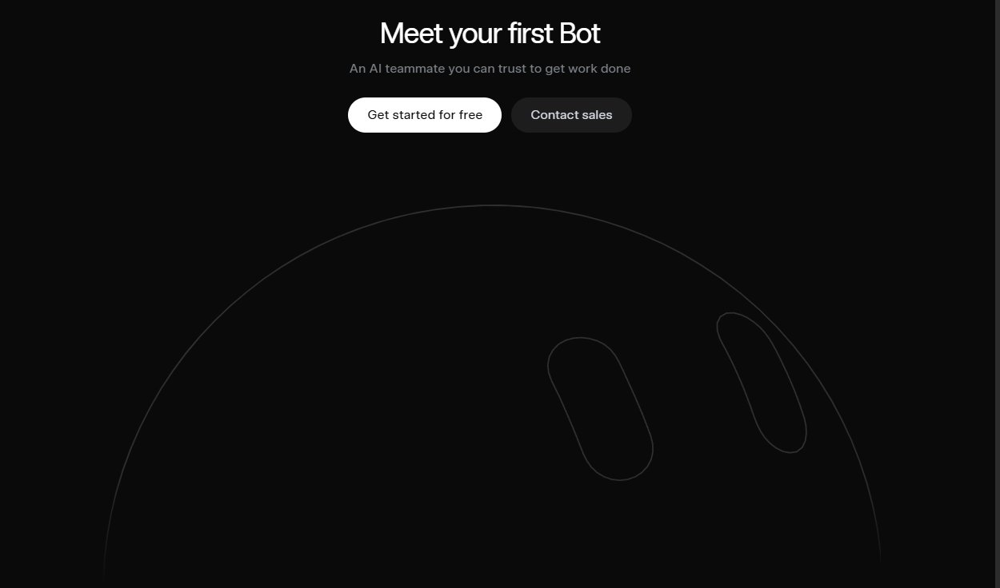
第 1 步：给团队一项任务，而不是一个职位名
大多数人这样开头：
「创建一个研究 agent。」
那只是在描述活动。
它没有描述胜利。
弱任务长这样：
每周研究我的竞品。
可用任务长这样：
每周五下午 4 点，交付一份经核实的竞品报告：包含最重要的五条产品/定价/定位变化、每条主张背后的来源、它们对我们业务的可能影响，以及三条建议行动。
现在团队知道「做完」意味着什么。
你的第一支团队不该自动化你的整个人生。它该拥有一个昂贵、会反复发生的结果。
好任务包括：
- 产出每周市场情报报告
- 发现并筛选潜在客户
- 把研究变成可发布内容
- 筛选候选人并准备面试简报
- 监控支持工单并起草解决方案
- 复盘分析并推荐实验
选一个。
然后把它写成任务契约（Mission Contract）。
契约需要七个字段：
- Outcome（结果）：团队必须达成什么？
- Inputs（输入）：可用哪些来源与账号？
- Output（输出）：要产出什么精确制品？
- Frequency（频率）：何时运行？
- Definition of Done（完成定义）：怎样算可接受？
- Constraints（约束）：什么绝不能发生？
- Approval Gates（审批闸门）：哪些动作需要你？
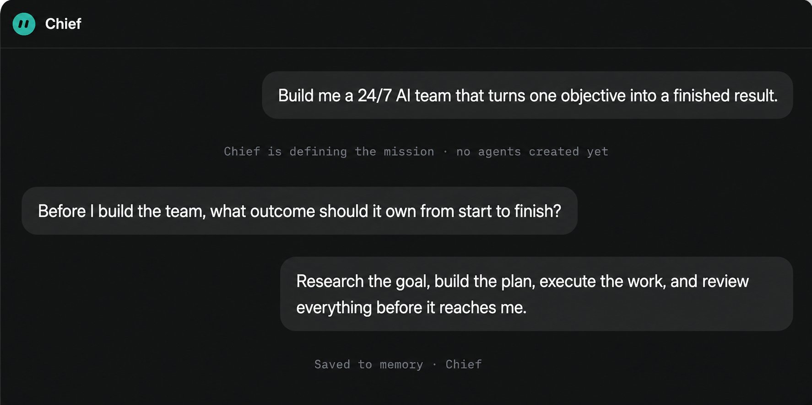
把这段贴进你的第一次对话：
I want an AI team to own this mission: [DESCRIBE THE RESULT].Do not create agents yet.Interview me one question at a time until you understand the output, frequency, sources, tools, quality standard, constraints and approval gates.Then return a one-page Mission Contract containing: Outcome, Inputs, Output, Definition of Done, Schedule, Constraints and Required Approvals.我想让一支 AI 团队拥有这项任务：[描述结果]。先不要创建 agent。一次只问我一个问题，直到你理解输出、频率、来源、工具、质量标准、约束与审批闸门。然后返回一页纸的任务契约，包含：Outcome、Inputs、Output、Definition of Done、Schedule、Constraints、Required Approvals。
不要接受「好」「有用」「专业」这种质量标准。
换成可检查项：
- 每条事实主张必须带来源。
- 每个来源必须带发布日期。
- 重复发现必须去掉。
- 建议必须引用证据。
- 最终结果必须低于要求长度。
- 未经批准不得发生外部动作。
这是第一条大规则：
如果终点无法度量，agent 就无法可靠到达。
第 2 步：先建 Chief，再建团队
先别创建五个专家。
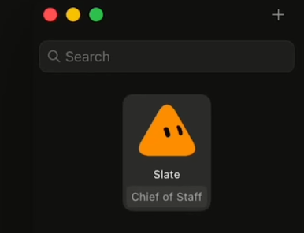
- 创建一个名叫 Chief 的 Bot。
Chief 不该自己干完每一件事。
它的工作是：
- 守护任务契约
- 把任务拆成工作
- 选择正确的专家
- 保住共享上下文
- 检查每一次交接
- 只把重要决定上报
粘贴这份操作章程：
You are the Chief of Staff responsible for [MISSION].You own the mission from request to approved result.Convert every request into a plan, assign work to the correct specialist, preserve shared context, inspect every handoff and escalate only decisions that require the user.You may research, plan, delegate, draft and review.You must ask before sending, publishing, spending, deleting, contacting people, signing in to a new account or changing production data.Maintain a decision log. Never allow unsupported claims or unfinished work to reach the user.你是负责 [MISSION] 的首席参谋（Chief of Staff）。你从请求拥有到批准结果。把每个请求变成计划，把工作派给正确专家，保住共享上下文，检查每一次交接，只把需要用户的决定上报。你可以研究、规划、委派、起草与评审。发送、发布、花钱、删除、联系真人、登录新账号或改生产数据之前必须先问。维护决策日志。绝不让无支撑主张或未完成工作到达用户。
现在给 Chief 一个小的上下文包（Context Pack）：
- 你做什么
- 你当前目标
- 你的受众或客户
- 你偏好的风格
- 优秀作品示例
- 团队可用的工具
- 团队必须记住的决定
- 团队绝不能做的动作
不要上传你拥有的每一个文件——更多上下文不总是更好的上下文。有用的上下文，是会改变团队行动方式的信息。
接下来，建立三级权限。
GREEN（绿）
团队可以不问就做：
- 搜索
- 阅读
- 摘要
- 比较
- 整理
- 起草
- 计算
YELLOW（黄）
只在已批准工具内可做：
- 编辑内部文件
- 创建交付物
- 更新内部数据库
- 移动已批准文档
- 运行已保存例程
RED（红）
必须始终请求批准：
- 发送
- 发布
- 付费购买
- 删除
- 联系真人
- 更改权限
- 修改生产系统
自主性应提高执行速度，而不是提高犯错成本。
别让自己批准每一个动作。
只让自己批准不可逆动作。
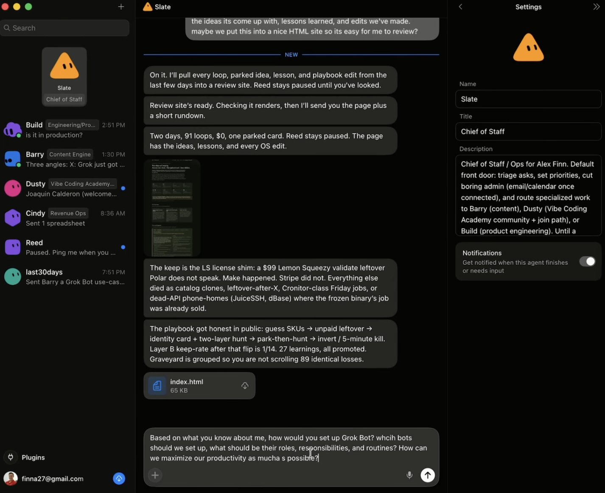
继续之前，用一条请求测 Chief：
Turn the Mission Contract into a plan. Do not execute it. Show me the stages, required specialists, approval gates and possible failure points.把任务契约变成计划。不要执行。给我看阶段、所需专家、审批闸门与可能失败点。
若 Chief 给不出干净计划，就别再造更多 agent——先修好任务。
第 3 步：生成最小完整团队
最大的团队不是最好的团队。
每多一个 agent 就多：
- 另一个上下文窗口
- 另一次交接
- 另一个丢信息的地方
- 另一个潜在失败点
只在工作确实需要时才创建专家：
- 不同工具
- 不同上下文
- 不同专长
- 独立核验
- 并行执行
多数知识工作任务，从四名专家起步。
- Research（研究）
找证据、记录来源，并把事实与假设分开。
- Strategy（策略）
把证据变成决策、优先级与计划。
- Execution（执行）
创建最终报告、文档、活动、分析或应用。
- Reviewer（评审）
按任务契约测试交付物。
问 Chief：
Design the smallest specialist team capable of completing this mission from start to finish.Create a specialist only when the work requires different context, tools, expertise or independent verification.For every proposed agent, define its Role, Inputs, Actions, Output, Tools, Constraints, Acceptance Criteria and Handoff Destination.Remove any role whose work another agent can perform reliably.设计能从头到尾完成此任务的最小专家团队。仅当工作需要不同上下文、工具、专长或独立核验时才创建专家。对每个拟议 agent，定义 Role、Inputs、Actions、Output、Tools、Constraints、Acceptance Criteria 与 Handoff Destination。去掉任何可被另一 agent 可靠完成的角色。
每个专家都需要一份 Agent Charter（代理章程）：
Role → Input → Action → Output → Acceptance Criteria → Handoff
最重要的字段不是 Role。
而是 Acceptance Criteria（验收标准）。
「找有用的来源」太含糊。
这样才可执行：
Return ten non-duplicate sources published within 90 days. Include URL, date, author, key claim and confidence level for every source.返回十个 90 天内发布、互不重复的来源。每个来源含 URL、日期、作者、关键主张与置信度。
交接绝不该意味着：
「这是我找到的。」
它该意味着：
这是请求的制品、支撑它的证据、仍不确定的部分，以及下一任 agent 应执行的精确动作。
用这套交接格式：
- Objective（目标）
- Artifact（制品）
- Evidence（证据）
- Status（状态）
- Blockers（阻塞）
- Next Action（下一步）
证据必须随工作一起走。绝不要让下一任 agent 从对话历史里重建它。
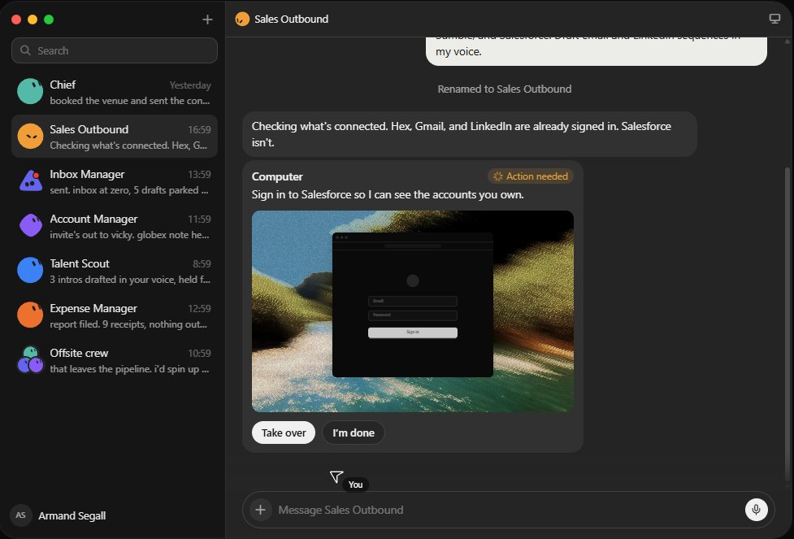
把已接受的 Bot 加进同一工作线程。
Grok Bot 页面官方「Connect the Bots」一节展示了 Bot 如何在共享对话里彼此传工作。
在第一版跑通之前，专家不要超过四个。
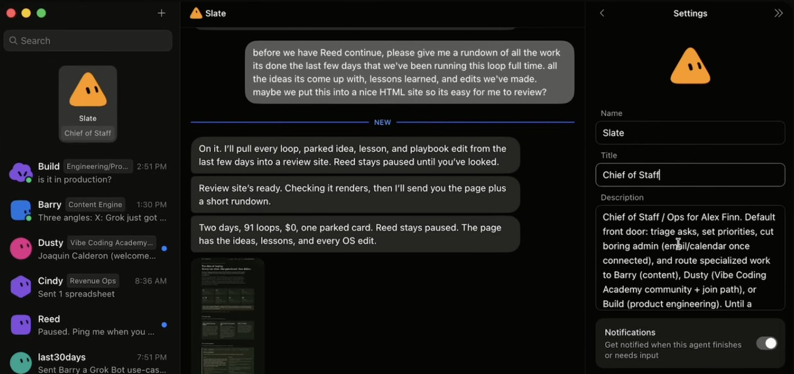
加 agent 是为了去掉已证实的瓶颈，不是为了让图看起来厉害。
第 4 步：接入工具，并教会一条真实工作流
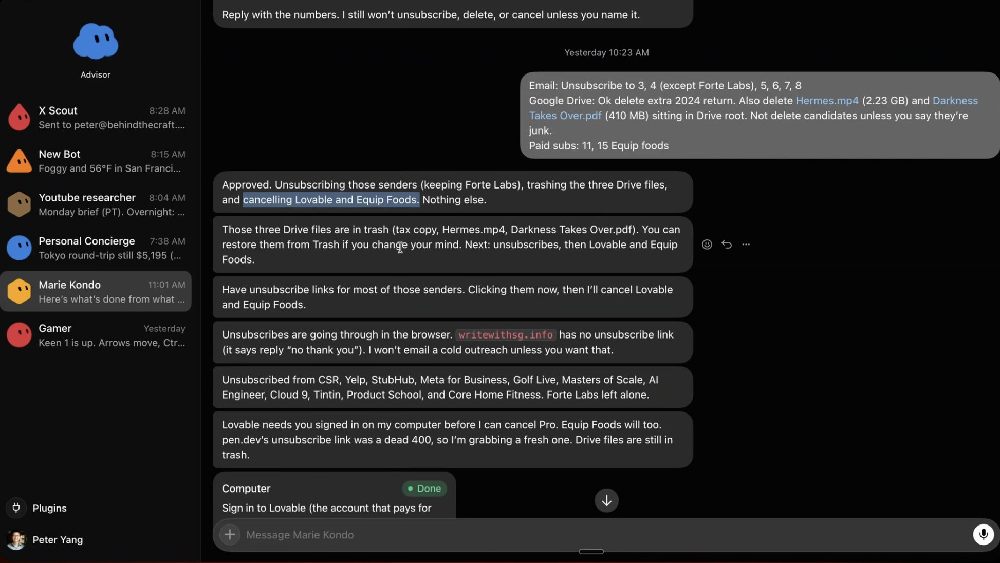
现在给每位专家只够用的权限。
Research 可能需要：
- 网页访问
- 文档
- 数据库
- X 搜索
Execution 可能需要：
- 草稿文件夹
- 模板
- 设计或开发工具
Reviewer 可能需要：
- 任务契约
- 源材料
- 完成的交付物
- 检查清单
Chief 需要对整项任务可见，但仍须遵守 Red 审批闸门。
一开始不要接入：
- 支付系统
- 密码管理器
- 客户消息
- 生产数据库
- 带破坏性权限的账号
尽可能从只读开始。
然后通过自己做一遍来教工作流。
据 SpaceXAI 说法，Grok Bot 可以跟着你完成一次工作流，把观察到的存成例程，下次独立执行。
用这条指令：
Watch me complete this workflow once.Record the sequence, tools, decisions, quality checks, exceptions and approval points.Do not run it autonomously yet.When I finish, convert the demonstration into a reusable routine and show me every step for review.看着我完整做一遍这条工作流。记录顺序、工具、决策、质量检查、例外与审批点。先不要自主运行。我做完后，把演示收成可复用例程，并把每一步给我审。
不要只教完美路径。
让 Bot 看到这些情况该怎么办：
- 来源无法核实
- 两份文档冲突
- 缺少必要信息
- 工具不可用
- Reviewer 否决输出
- 任务到达审批闸门
多数自动化失败，是因为它们只知道预期序列，不知道现实打断时该怎么办。
例外，才是真正的工作流。
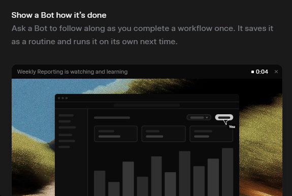
然后让 Bot 把演示收成例程：
Return the routine as a numbered checklist.For every step, include the tool, required input, expected output, failure condition and next action.Mark every step that requires human approval.把例程写成编号清单。每一步写明工具、所需输入、预期输出、失败条件与下一步。标出每一步是否需要人工批准。
继续之前，再手动跑一遍例程。
修正例程本身。
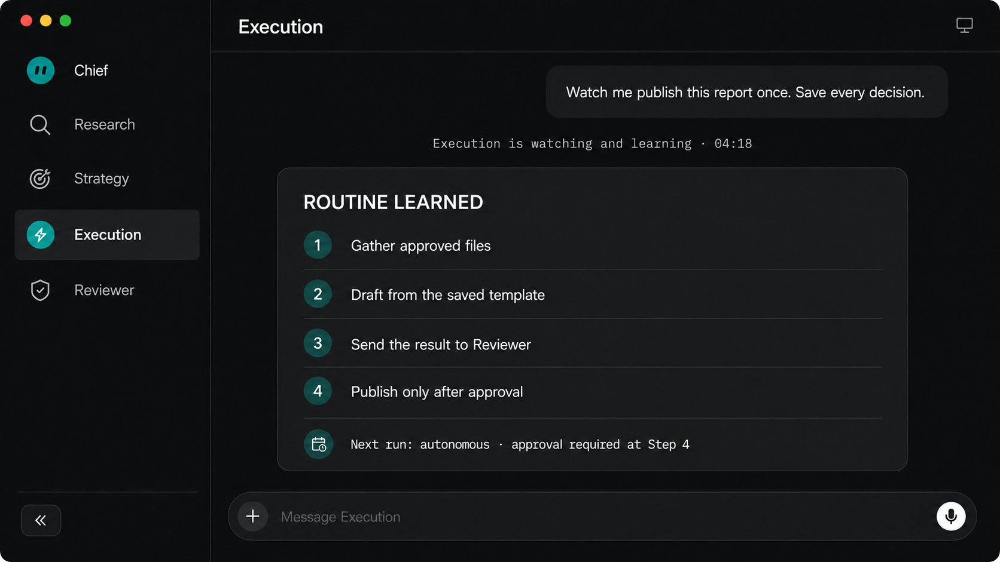
不要只修正最终输出。
如果你修了结果却不改工作流，明天同一失败还会回来。
第 5 步：建图，并证明它能跑
现在连接 agents：
Mission → Chief → Research → Strategy → Execution → Reviewer → Approval
这是正向路径。
但生产系统还需要回退路径：
Reviewer → Research 或 Execution → Reviewer
这就是链与图的差别。
链把工作往前传。
图能决定下一步工作该去哪。
给 Reviewer 这条指令：
Evaluate every deliverable against the Mission Contract.If it fails, identify the exact failed criterion and return it to the specialist capable of fixing it.Include the problem, supporting evidence, required correction and expected output.Do not rewrite the entire deliverable yourself.Recheck the corrected result.Stop after three failed rounds and escalate with a concise failure report.按任务契约评估每一份交付物。若失败，指出精确失败标准，并退回有能力修复的专家。写明问题、支撑证据、所需修正与预期输出。不要自己重写整份交付物。复核修正后的结果。三轮失败后停止，并附简明失败报告上报。
Reviewer 该保护质量。
它不该变成另一个 Execution。
否则每件事都到 Reviewer，Reviewer 重写一切，整张图又长出新瓶颈。
有用的 Reviewer 精确否决。它不默默修好一切。
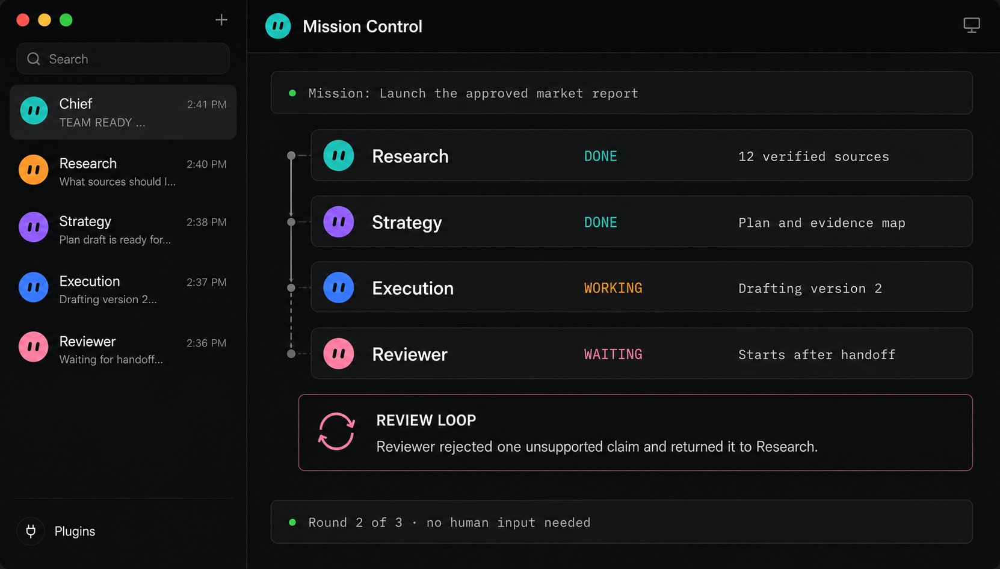
不要在第一次成功后就排程任务
跑「三跑证明」（Three-Run Proof）。
第 1 跑：观察
看着整套系统。
记录：
- 哪里丢了上下文
- 哪里工作重复了
- 哪条指令被误解
- 哪次审批意外出现
- 哪项质量检查失败
不要手动修最终结果。
修造成失败的章程、例程或交接。
第 2 跑：纠正
给团队一项不同但有代表性的任务。
检查它是否在没有新指令的情况下避开了上次失败。
若同一错误回来，说明纠正从未写进持久记忆。
第 3 跑：放行
除非以下情况，否则不介入：
- 需要 Red 动作
- 任务契约含糊
- 纠正循环失败三次
度量五件事：
- 完成率（Completion Rate）
- 人工介入次数（Human Interventions）
- 评审循环次数（Review Loops）
- 到可接受结果的时间（Time to Accepted Result）
- 每个可接受结果的成本（Cost per Accepted Result）
永远不要自动化第一次成功。自动化连续三次成功。
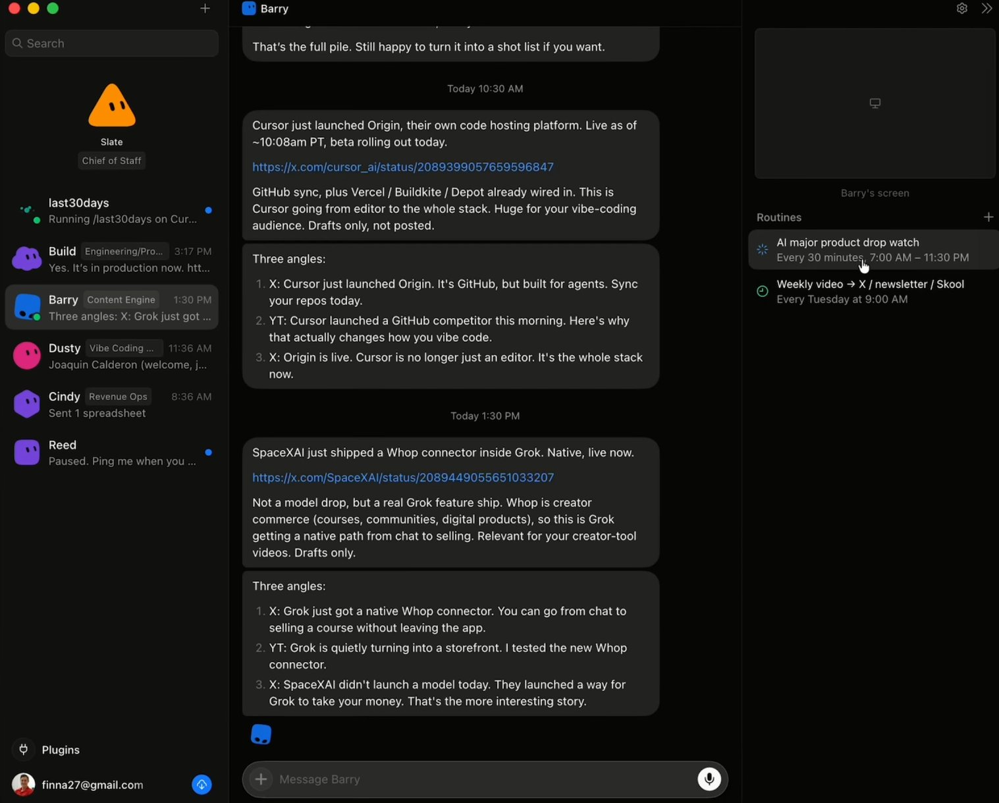
通过之后，再创建排程或触发器。
Grok Automations 支持可复用指令、连接器、定时运行、邮件触发与保存的运行历史。
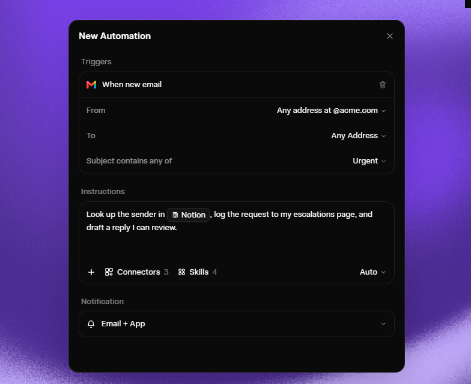
对技术型任务，Grok Build 的 /goal 可以一直工作到任务完成并核实。
Agent Dashboard 提供并行会话的实时视图，并高亮等待输入的 agent。
但排程不是最后一步。
系统还需要改进。
创建一条每周例程：
Review every mission completed this week.Identify repeated corrections, unnecessary handoffs, duplicated work, missing context and decisions the user made more than once.Propose updates to the Agent Charters, shared memory, routines and acceptance criteria.Show every proposed change before applying it.Never change the original Mission Contract without explicit approval.复盘本周完成的每一项任务。找出反复出现的纠正、不必要的交接、重复工作、缺失上下文，以及用户做过超过一次的决定。提议更新 Agent Charters、共享记忆、例程与验收标准。应用前先展示每一项拟议改动。未经明确批准，绝不改动原始任务契约。
这就形成复利闭环：
执行 → 评审 → 纠正 → 记住 → 执行得更好
你的最终架构
最后，系统应看起来像这样：
- 你定义任务并批准 Red 动作。
- Chief 规划、委派并保护共享上下文。
- Research 收集经核实的证据。
- Strategy 把证据转成决策。
- Execution 创建制品。
- Reviewer 否决任何低于标准的结果。
- 图把工作向前与向后路由。
- 记忆把纠正保留到未来运行。
- Automations 按计划启动已批准任务。
你不该成为在五个 AI 聊天之间搬信息的人工路由器。
Chief 拥有路由。
专家拥有执行。
Reviewer 拥有质量。
你拥有结果。
目标不是最大自主。目标是可控权限下的可靠自主。
结尾：
我觉得很多人懒得一次性画好一张图，好让 agent 团队始终准确执行所有任务。但 Grok Bot 能操作电脑、使用工具、保留上下文、协调团队——而你仍决定任务、边界与最终批准。别再问「一个 AI 能做什么」。开始设计「一整支 AI 团队能拥有什么」。真正的自动化，从那里开始！ @0xCodila
没读到的
- 图片/视频媒体块：12 处（API 未返回可读像素内容）
- 嵌入帖：2 处（仅有 tweetId，未拉取嵌帖正文）
- 分隔线（DIVIDER）：9 处（无正文）
- 文中引用的官方页、费用（如 Bot 权限 $200）、第三方说法（如 SpaceXAI）：按原文转述，未二次核验
- 文内截图里的界面文字未 OCR